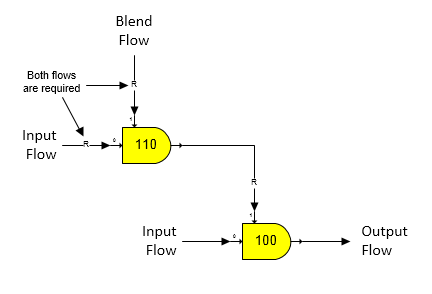

As shown on the Blender Properties window below, a blend flow is being blended into an input flow until the output flow contains 0.50% CaO. Other possibilities are for the blend flow to be controlled to give an output flow Non-Sugar to Water Ratio, Quantity, Dry Substance, Purity, or Temperature. And, the blend flow can be made a ratio of the input (primary) flow as either to the total input flow or a component in the input flow; or, the blend flow quantity can be set to a specified value (Blend Quantity).
Blend (port 1) flows to a blender are always required flows regardless of whether they are internal, or external flows. Conversely, the input (primary) port 0 flow into the blender will be a required flow only if the output flow from the blender is required by another station. If the output flow is a required flow, and a Quantity has been specified, the required value will be used instead of the specified Quantity; however, Sugars will give a warning message that the specified Quantity was not used. The figure below shows two blenders cascaded together to blend a second blend flow into a blend flow for another blender. Because the blend flow into station no. 100 is required, the output flow from station no. 110 is required; hence, Sugars will calculate the quantities of both flows into station no. 110 (i.e., both input flows are required).

Because the output flow from a blender station can be a required flow, the blender station can be used to mix two flows at a set ratio to satisfy the needs of another station; for example, the vapor requirements of a pan station can be satisfied by a blender with two vapor input flows of different pressure that are combined together in a specified ratio.